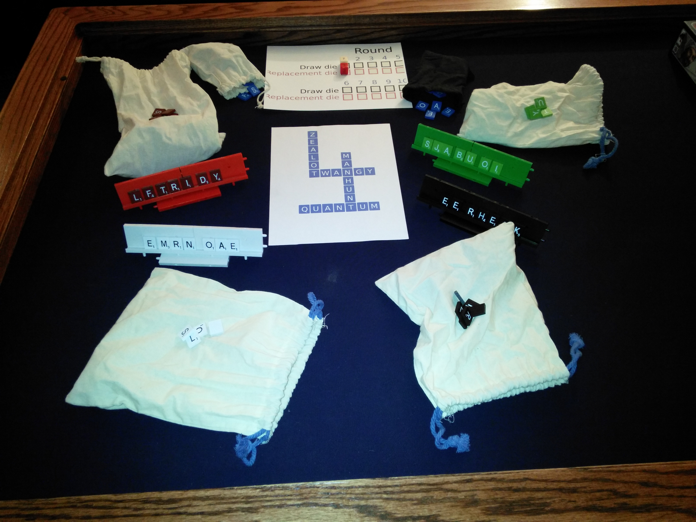
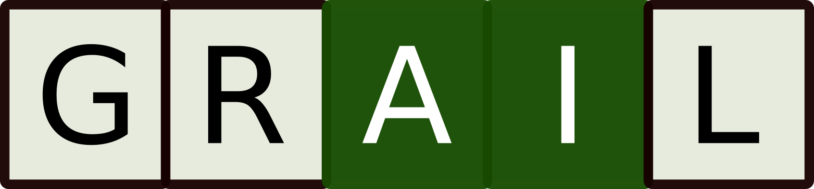
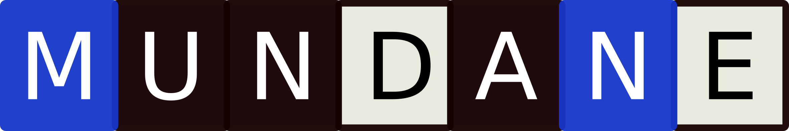
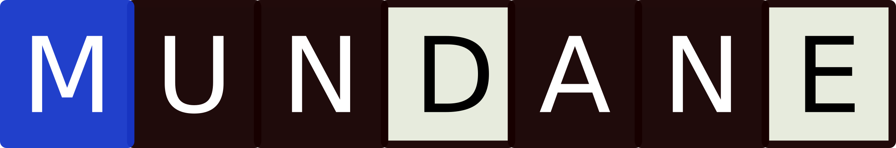
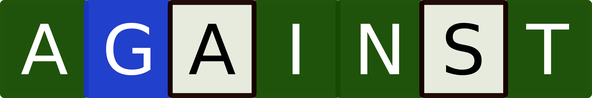

Rules for Control Word
Table of Contents
Control Word is a tile laying crossword game much like a popular crossword board game, but with elements of area control and direct player interaction. Each player plays words using a different color of tiles. Points are scored by having the most tiles of your color in a word at the end of the game. Longer words score more points. The player who controls the most words and scores the most points is the winner!
In each round, each player will play a word formed from a rack of tiles. Any tiles not used to play a word can be used to replace your opponent's tiles in an attempt to gain control of that word. At the end of the game, you will score points for words that you control by having the most letters in your tile color.
Components
- Bags containing 98 letter tiles (i.e. a standard 100-letter tile set with the blank tiles removed) in four player colors (black, white, red, green) and one non-player color (blue).
- 6 starting play mats, each containing four crossing words in blue.
- 1 die with faces 6, 7, 7, 8, 8, 9.
- 1 die with faces 2, 3, 3, 4, 4, 5.
To use normal 6-sided dice. Use the following table to interpret the rolls of the draw die and the replacement limit die:
| If you roll | use for the draw die | use for the replacement limit |
|---|---|---|
| 1 | 6 | 2 |
| 2 | 7 | 3 |
| 3 | 7 | 3 |
| 4 | 8 | 4 |
| 5 | 8 | 4 |
| 6 | 9 | 5 |
Setup
The game is played on any flat surface which is large enough to hold about 20 side-by-side tiles in both directions. The board from any tile-laying word game can be used, but special spaces are ignored and words can extend beyond the grid on the board. It's probably easiest to simply play right on the table.
- Select a starting play mat. The starting play mats are the sheets which depict four crossing words printed in blue. Place this in the center of the table.
- Each player claims a bag of tiles in the color of their choice.
- Roll the draw die (white). Each player will draw a number of tiles equal to the number rolled.
- Roll the replacement die (red). This sets the number of tiles that can be played in the replacement phase.
- Place the draw and replacement dice on round 1 of the round counter mat.
- Place the bags of blue vowels and blue consonants within easy reach of the play area.
- Each player draws a tile from the bag. The lowest (closest to A) letter is the first player. Return these tiles to the bag and give the first player token to the first player.
How many rounds?
You are now ready to play. The play area should look like this:

Playing the game
Roll phase
The dice are rolled. The draw die (white) sets how many tiles are drawn to the rack at the end of the round. The replacement die (red) sets how many tiles may be played in the replacement phase during this round.
Place the draw and replacement dice on the round counter mat to indicate the current round number.
Word phase
Starting with the first player and proceeding to the left, each player plays a word using any number of tiles from the rack. In the first round, the first word must be played crossing one of the words on the start mat. All subsequent word phase plays can cross other played words or words on the start mat.
A word must be an English-language word. Players should agree upon a dictionary to use for resolving challenges. Proper nouns, foreign-language words not adopted into English, acronyms, and abbreviations are not allowed. In short, the rules for allowable words are the same as the vastly more popular word game that this game resembles.
Word placement rules from that other crossword game apply. New words are formed by
- Adding one or more letters to a word or letters already on the board.
- Placing a word at right angles to a word already on the board. The new word must use one of the letters already on the board or must add a letter to it.
- Placing a complete word parallel to a word already played so that adjacent letters also form complete words.
In Control Word, Unlike other word games, each letter is of equal value. Longer words score more points. 2 and 3 letter words score no points. (2 and 3 letter words can be controlled by a player for the purpose of the end-of-game tie-breaker.)
Note that adding to the beginning or end of a word is an action of the word phase rather than the replacement phase, as in this example:
A player may choose not to play a word, saving letters for the replacement phase.
Replacement phase
After the word phase, the starting player begins the replacement phase. Passing to the left, all players take their replacement phase actions.
Start with the last player and pass to the right?
Using any remaining tiles from the rack, replace other tiles on the board. These can be tiles in other player colors or any blue tiles – including the spaces on the starting word mat. To replace a letter on the start mat, simply place a tile in your color on top of that letter on the mat.
More than one tile in a word can be replaced in a turn, so long as all words are still words at the end of each player's turn.
The simplest replacement phase action is to replace a letter of a different color with the same letter of your color. Replacing a letter with a different letter is allowed, but the newly formed word must be in the dictionary. As an example "playing" can be changed to "praying" by replacing the "l" with an "r" of your color.
Multiple letters can be replaced in the same word. If one or more of those replacements are of different letters, the word must still be a word at the end of your turn. For example, "repast" can be turned into "repent" by replacing "as" with "en" in your color.
If the replaced tile is a crossing tile, i.e. it is part of two words which cross at that point, both words must be valid words after the replacement.
Replaced tiles are discarded (not returned to the bag).
A player may choose not to play in the replacement phase.
Draw phase
After the replacement phase, each player draws back up to the rack limit determined in the roll phase.
Blue vowels and consonants
At any time, as a free action, you may replace a tile from your rack with a tile from either the bag of blue vowels or the bag of blue consonants. Simply return one of your tiles to your bag (it is not discarded) and draw a tile from one of the blue bags. You may repeat this free action any number of times.
Using the blue tiles in this way can help repair a rack lacking either vowels or consonants, allowing you to play a longer, more valuable word. The drawback is that the word you play will have fewer tiles of your color, weakening your control over the word.
The only way to remove a blue tile from your rack is to play it in a word. You may not return a blue tile to its bag when replacing a rack.
Replacing a rack
At the beginning of your turn, you can opt to return your entire rack of tiles – except for any blue tiles on your rack – to your bag. Shake the bag to mix the tiles, redraw to 2 less than the current rack limit (but a minimum of 5), then proceed with your turn. If you are still unsatisfied with your rack, you may redraw as many times as you like to that same number of tiles, but each subsequent draw costs two penalty tokens .
Challenging a word
Any word played in phase 1 or phase 2 can be challenged. The challenge is resolved using a dictionary agreeable to all players. If the challenged word is allowable, play continues. If the challenged word is not allowable, the player who played the word must withdraw the tiles played (resetting any changed tiles) and take one penalty token . That player does not loose a turn and may make a different play immediately.
Scoring words
When a word is played, that player scores immediately based on the length of the word, as given in the "When played" column in table below.
At the end of the game:
- The player with the most tiles (simple plurality) in a word scores
that word. Some examples: A five letter word requires that three
letters be of one color in order to claim that word. Here, white
controls the word with majority and receives 6 points at
game's end:

This seven letter word is scored by black as there are three black tiles, two white, and two have remained blue. Black controls the word by plurality and receives 14 points at game's end:

Here, black has claimed a fourth tile, thus black controls the word by majority and receives 21 points at game's end:

- Any word for which the blue tiles have plurality or majority control does not score for any player.
- Any word for which two (or more) colors (including blue) are tied for control does not score for any player.
- Controlling 1/2 the letters of an even-length word counts as
majority. For example, with three tiles, green has majority
control of this 6 letter word, scoring 12 points:

Long words are rewarded. Use the chart below for scoring.
Scoring chart
When a word is played it scores immediately according to the "When played" column.
End game scoring depends upon whether a player controls a plurality or majority of letters in the word.
| word length | When played | End game plurality | End game majority |
|---|---|---|---|
| 2 | 0 | 0 | 0 |
| 3 | 0 | 0 | 0 |
| 4 | 1 | 2 | 3 |
| 5 | 2 | 4 | 6 |
| 6 | 4 | 8 | 12 |
| 7 | 7 | 14 | 21 |
| 8 | 11 | 22 | 33 |
| 9 | 16 | 32 | 48 |
| 10 | 22 | 44 | 66 |
| 11 | 29 | 58 | 87 |
| 12 | 37 | 74 | 111 |
- Formula
- Word length = 2 or 3 gets 0 points. For word length 4+:
- n = word length
- x = n-3
- in-game score = (x^2 - x + 2) / 2
- plurality = in-game * 2
- majority = in-game * 3
Each J, Q, X, or Z in a word scores a 4 point bonus for the player playing that word. This bonus is scored when the word is played and only scores for words which are 4 or more letters long.
End of game
The game ends after How many rounds?.
Glossary
- A penalty token is a tile taken from the bag of blue consonants and kept face down beside a players rack for the remainder of the game. At scoring, penalty tokens count against the score from words you control.
- A play mat shows the starting words for the game. At the beginning of the game, the starting words are completely controlled by the blue non-player. Control of these blue words can be seized during the replacement phase.
- Plurality control of a word: having the most tiles in a word of your
color while having less than 50% of the letters. For example, green
has plurality of a 7 letter word when 3 letters are red, 2 letters
are black, and two letters are green, e.g.:
- Majority control of a word: having more than 50% of the tiles in a
word in your color. For example, green has majority control of a
7 letter word when 4 of the tiles are green, e.g.:
